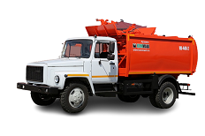

ДОГОВОР
№ на оказание услуг по вывозу твердых бытовых отходов с владельцами индивидуальных жилых домов г. Шемонаиха «__» _____20__ г
Товарищество с ограниченной ответственностью «Шемонаихинский Ком—Хоз», именуемое в дальнейшем «Услугодатель», в лице директора Максутбекұлы Архата, с одной стороны, и собственник дома ___________________ именуемый в дальнейшем «Потребитель», с другой стороны, заключили настоящий договор о нижеследующем:
1. ПРЕДМЕТ ДОГОВОРА
1.1. Предметом договора является – оказание услуг по вывозу твердых бытовых отходов из стандартных металлических контейнеров объемом 0,75 м3.
2. ПОРЯДОК ОПЛАТЫ
2.1. Оплата за услуги по вывозу твердых бытовых отходов производится Потребителем в размере 100% оплаты, стоимость одного вывоза контейнера согласно действующего тарифа. Форма оплаты – наличный в кассу Услугодателя.3. ПРАВА И ОБЯЗАННОСТИ СТОРОН
3.1.«Потребитель» обязан: 3.1.1.Своевременно вносить оплату за услуги, предоставляемые Услугодателем, согласно п. 2.1 настоящего договора. 3.1.2.Обеспечить свободный проезд к местам сбора твердых бытовых отходов, в зимнее время производить очистку подъездных путей от снега. 3.1.3.Не допускать смешивание твердых бытовых отходов со строительным мусором, собранным с приусадебного участка, породой и навозом. Вывоз данного мусора осуществляется согласно п.3.3.2. 3.1.4. Не допускать примерзания ТБО к стенкам контейнера, не поджигать и не складировать горящую\тлеющую золу. В случае если требования по складированию твердых бытовых отходов не соблюдены, вывоз ТБО осуществляться не будет, при этом заявка будет считаться исполненной. Повторный выезд будет осуществлен после оплаты услуги в размере 100%. 3.2.«Потребитель» имеет право: 3.2.1.На своевременный вывоз твердых бытовых отходов согласно утвержденным маршрутным графикам Услугодателя в течении 3-х рабочих дней, при исправной технике и благоприятных метеорологических условиях. 3.2.2.На получение достоверной информации о правильности применения цен Услугодателя. 3.3.«Услугодатель» обязан: 3.3.1.Производить расчеты объемов твердых бытовых отходов на основании утвержденных норм накопления и образования твердых бытовых отходов по г. Шемонаиха; 3.3.2. Услугодатель не обязан вывозить крупногабаритные, горелые, ядовитые, токсичные, тлеющие, строительные отходы,ТБО смешанные с жидкими отходами, листья и ветки деревьев; 3.3.3.За дополнительную плату производить вывоз крупногабаритного и строительного мусора, навоза по заявкам «Потребителя» при условии предоплаты; 3.3.4. Услугодатель освобождается от обязанности по вывозу от выгрузки ТБО из перегруженных контейнеров весом более 500 кг, из контейнеров, имеющих технические повреждения, что может привести к нарушению правил охраны труда и техники безопасности; 3.3.5. Услугодатель не несет ответственности за не вывоз ТБО при отсутствии возможности свободного подъезда к контейнерам и их выгрузки из-за закрытых ворот, неорганизованных стоянок транспортных средств, отсутствия свободных разворотных площадок во дворах с тупиковыми проездами, снежных заносов, гололеда, замерзания ТБО; 3.3.6.При изменении стоимости услуг по вывозу твердых бытовых отходов извещать Потребителя в средствах массовой информации за 10 календарных дней до повышения стоимости услуг. 3.4.«Услугодатель» имеет право: 3.4.1.При увеличении затрат повысить стоимость услуг по вывозу твердых бытовых отходов в одностороннем порядке.
4. ДЕЙСТВИЕ ДОГОВОРА
4.1. Срок действия договора с «_» ____20_ г. по «_» ____ 20___г. 4.2. Если по истечении срока договора, указанного в п. 4.1. Потребитель продолжает вносить оплату и пользоваться услугами Услугодателя, то договор считается пролонгированным на неопределенный срок. 4.3. Договор может быть, расторгнут, если одна из сторон направит другой стороне письменное уведомление о расторжении договора за 30 дней до предполагаемой даты прекращения действия настоящего договора. 4.4.Договор составлен в 2-ух экземплярах, имеющих одинаковую юридическую силу, по одному у каждой стороны.
5. ФОРС-МАЖОР
5.1. Стороны не несут ответственность за неисполнение условий Договора, если оно явилось результатом форс-мажорных обстоятельств. 5.2 Для целей Договора «форс-мажор» означает событие, неподвластное контролю Сторон, и имеющее непредвиденный характер. Такие события могут включать, но не исключительно: военные действия, природные катаклизмы или стихийные бедствия и другие.
6. ОТВЕТСТВЕННОСТЬ СТОРОН.
6.1. В случае не выполнения Потребителем пункта 3.1., Услугодатель приостанавливает оказание услуг по вывозу твердых бытовых отходов до полного погашения задолженности и выполнения требований данного пункта. 6.2. Услугодатель и Потребитель несут ответственность за неисполнение или не надлежащее исполнение обязательств в соответствии с действующим законодательством Республики Казахстан. 6.3. Все разногласия и споры, по которым не достигнуто согласие сторон, решаются в соответствии с законодательством Республики Казахстан. Вопросы, не урегулированные настоящим договором, рассматриваются в соответствии с положениями Гражданского Кодекса Республики Казахстан.
7. АДРЕСА И РЕКВИЗИТЫ СТОРОН
«УСЛУГОДАТЕЛЬ» ТОО Шемонаихинский Ком-Хоз», РК ВКО г.Шемонаиха, Ул Якутская 30, БИН 060140016703 ИИК KZ 928562203100976774 БИК KСJBKZKX АО «БанкЦентрКредит», Свидетельство НДС серия 18001 №0576570 от 01.10.2022г. тел. 8 (72332) 3-22-23, сот.+7 776 853 6164